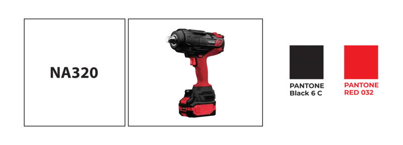

NIAPRO · 20V · Akülü
NA320
Akülü somun sıkma. 3/4" soket, 2000 Nm maksimum tork, kömürsüz (brushless) motor, 2 × 6.0 Ah akü.

Açıklama
Akülü somun sıkma
3/4" soket, 2000 Nm maksimum tork, kömürsüz (brushless) motor, 2 × 6.0 Ah akü.
Teknik değerler ASEL 2026 kataloğundan alınmıştır. Kataloğu indir (PDF) ›
Teknik özellikler
| Soket karesi | 3/4" |
| Maksimum tork | 2000 Nm |
| Otomatik durdurma | Geri dönüşte otomatik durdurma fonksiyonu |
| Pil teknolojisi | 20V – 10 C pil |
| Motor tipi | Kömürsüz (Brushless) Motor – 6025 |
| Boşta devir hızı | 0–1000 / 1300 / 1600 r.p.m |
| Darbe sayısı | 0–1500 / 1800 / 2000 b.p.m |
| Akü | 2 × 6.0 Ah akü |
| Şarj cihazı | Masa tipi, VDE fişli, 2.0 A |
| Ağırlık | 4,1 kg |
| Aydınlatma | LED çalışma lambası |
| Akü durumu | Entegre akü seviye göstergesi |
Teslimat
Kutu içeriği / Teslimat
NIAPRO ürünleri markalı kutuda teslim edilir.